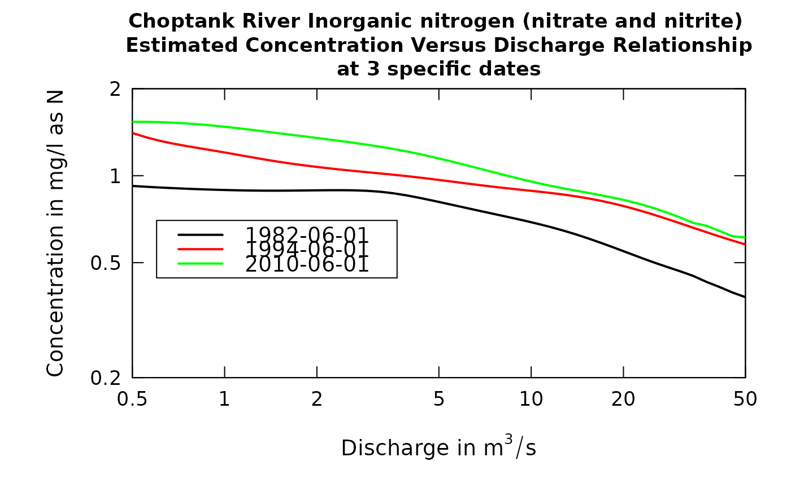

Plot up to three curves representing the concentration versus discharge relationship. Each curve is a different point in time.
Source:R/plotConcQSmooth.R
plotConcQSmooth.RdThese plots are like a vertical slice of the estimated concentration surface that is seen in the plotContours function. These plots show how the concentration-discharge relationship is changing over time. Typically the time points selected would be in three years at the same time of year spaced out over the period of record. But that is not necessary. Another possibility is to use this to explore seasonal differences. In this case the three dates would be in the same year but different times during the year.
This plot can also help identify situations where the windowQ may be too small. If there are substantial oscillations of some of the curves, then the windowQ should be increased. Alternatively, windowQ may be too large. This can be seen when the windowQ is reduced (say to 1.0). A good choice of windowQ would be a value just great enough to damp out oscillations in the curves.
Although there are a lot of optional arguments to this function, most are set to a logical default.
Data come from named list, which contains a Sample dataframe with the sample data, and an INFO dataframe with metadata.
Usage
plotConcQSmooth(eList, date1, date2, date3, qLow, qHigh, qUnit = 2,
legendLeft = 0, legendTop = 0, concMax = NA, concMin = NA,
bw = FALSE, printTitle = TRUE, printValues = FALSE, minNumObs = 100,
minNumUncen = 50, colors = c("black", "red", "green"),
printLegend = TRUE, windowY = 7, windowQ = 2, windowS = 0.5,
tinyPlot = FALSE, customPar = FALSE, lwd = 2, cex = 0.8,
cex.axis = 1.1, cex.main = 1.1, cex.legend = 1.2, lineVal = c(1, 1,
1), logScale = FALSE, edgeAdjust = TRUE, concLab = 1,
usgsStyle = FALSE, ...)Arguments
- eList
named list with at least the Sample and INFO dataframes
- date1
character specifying the date for the first curve on the graph, it is in the form "yyyy-mm-dd" (must be in quotes)
- date2
character specifying the date for the second curve on the graph, it is in the form "yyyy-mm-dd" (must be in quotes). If only one curve is wanted this should be NA
- date3
character specifying the date for the third curve on the graph, it is in the form "yyyy-mm-dd" (must be in quotes). If a third curve is not wanted this should be NA
- qLow
numeric value for the lowest discharge to be considered, expressed in the units of discharge that are being used (as specified in qUnit)
- qHigh
numeric value for the highest discharge to be considered, expressed in the units of discharge that are being used (as specified in qUnit)
- qUnit
object of qUnit class.
printqUnitCheatSheet, or numeric represented the short code, or character representing the descriptive name.- legendLeft
numeric which represents the left edge of the legend in the units of the plot.
- legendTop
numeric which represents the top edge of the legend in the units of the plot.
- concMax
numeric value for upper limit on concentration shown on the graph, default = NA (which causes the upper limit to be set automatically, based on the data)
- concMin
numeric value for lower limit on concentration shown on the vertical log graph, default is NA (which causes the lower limit to be set automatically, based on the data). This value is ignored for linear scales, using 0 as the minimum value for the concentration axis.
- bw
logical if TRUE graph is produced in black and white, default is FALSE (which means it will use color)
- printTitle
logical variable if TRUE title is printed, if FALSE not printed
- printValues
logical variable if TRUE the results shown on the graph are also printed to the console and returned in a dataframe (this can be useful for quantifying the changes seen visually in the graph), default is FALSE (not printed)
- minNumObs
numeric specifying the miniumum number of observations required to run the weighted regression, default is 100
- minNumUncen
numeric specifying the minimum number of uncensored observations to run the weighted regression, default is 50
- colors
color vector of lines on plot, see ?par 'Color Specification'. Defaults to c("black","red","green")
- printLegend
logical if TRUE, legend is included
- windowY
numeric specifying the half-window width in the time dimension, in units of years, default is 7
- windowQ
numeric specifying the half-window width in the discharge dimension, units are natural log units, default is 2
- windowS
numeric specifying the half-window with in the seasonal dimension, in units of years, default is 0.5
- tinyPlot
logical variable, if TRUE plot is designed to be plotted small as part of a multipart figure, default is FALSE.
- customPar
logical defaults to FALSE. If TRUE, par() should be set by user before calling this function (for example, adjusting margins with par(mar=c(5,5,5,5))). If customPar FALSE, EGRET chooses the best margins depending on tinyPlot.
- lwd
number line width, default is 2
- cex
numerical value giving the amount by which plotting symbols should be magnified
- cex.axis
magnification to be used for axis annotation relative to the current setting of cex
- cex.main
magnification to be used for main titles relative to the current setting of cex
- cex.legend
magnification to be used for legend annotation relative to the current setting of cex
- lineVal
vector of line types. Defaults to c(1,1,1) which is a solid line for each line. Options: 0=blank, 1=solid (default), 2=dashed, 3=dotted, 4=dotdash, 5=longdash, 6=twodash
- logScale
logical whether or not to use a log scale in the y axis. Default is FALSE
- edgeAdjust
logical specifying whether to use the modified method for calculating the windows at the edge of the record. The modified method tends to reduce curvature near the start and end of record. Default is TRUE.
- concLab
object of concUnit class, or numeric represented the short code, or character representing the descriptive name.
- usgsStyle
logical option to use USGS style guidelines. Setting this option to TRUE does NOT guarantee USGS compliance. It will only change automatically generated labels
- ...
arbitrary graphical parameters that will be passed to genericEGRETDotPlot function (see ?par for options)
Examples
date1 <- "1982-06-01"
date2 <- "1994-06-01"
date3 <- "2010-06-01"
qLow <- 0.5
qHigh <- 50
eList <- Choptank_eList
# \donttest{
plotConcQSmooth(eList, date1, date2, date3, qLow, qHigh,
legendLeft = 0.6, legendTop = 0.7)
plotConcQSmooth(eList, date1, date2, date3, qLow, qHigh,
logScale=TRUE, legendLeft = 0.6, legendTop = 0.7)

# }